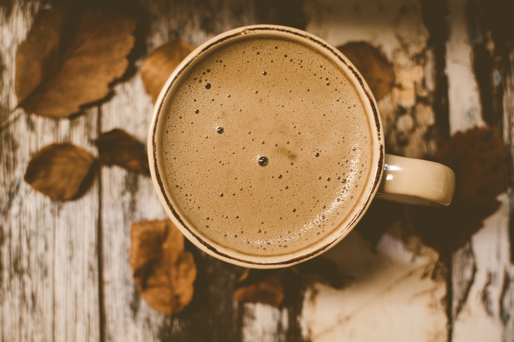

Café de especialidad
Nuestra misión es que puedas disfrutar de una amplia variedad de los mejores cafés del mundo. Cuidamos por ello la selección: cafés de temporada. Prestamos mucha atención al tueste: dando un perfil único a cada café y tostando a diario en una de las más avanzadas máquinas de tueste actuales.
